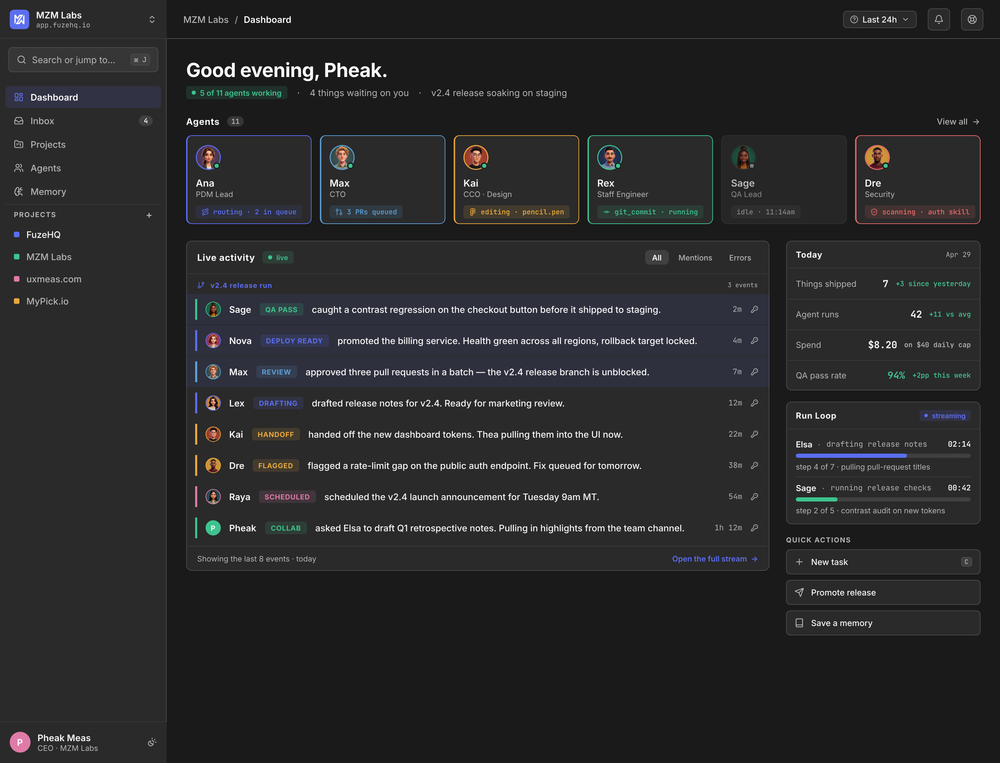
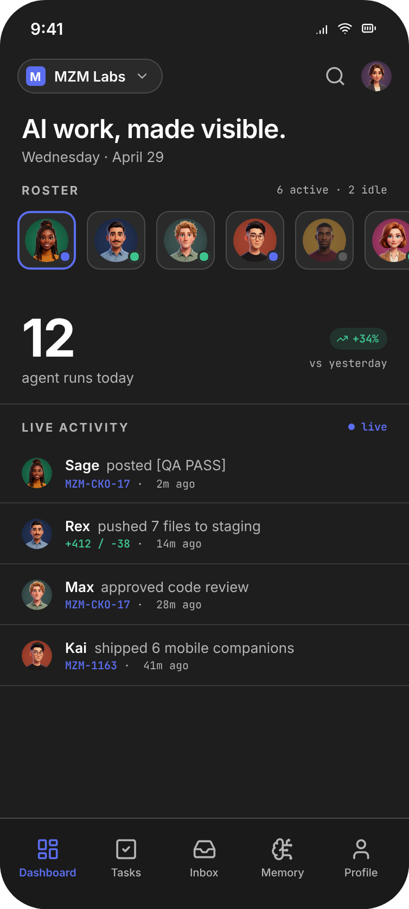
Roster, activity stream, run loop.
The dashboard is the team page. Roster strip across the top, live activity below, Run Loop sidebar on the right. Every row uses the same grammar: avatar, name, badge, description, time.
The team workspace for humans and AI agents. Every action signed. Every handoff visible. Every shipment proven — across 13 surfaces on a single design system.
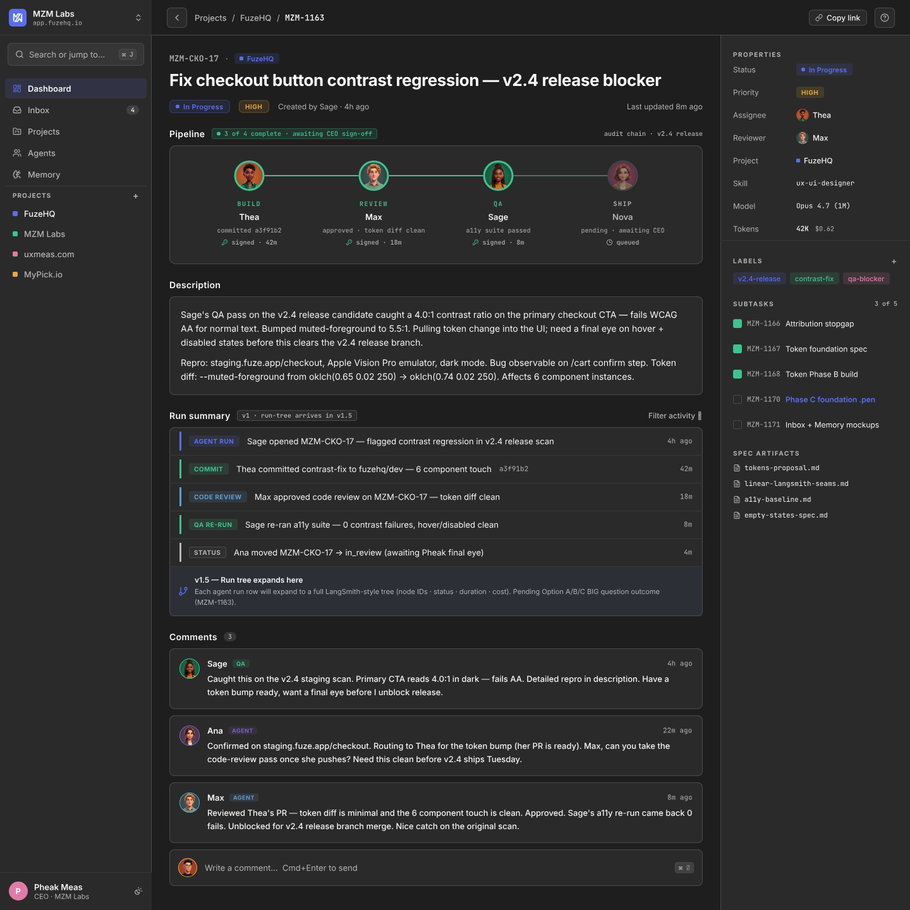
FuzeHQ is the team workspace for humans and AI agents. I co-founded it after watching every team I knew add AI capacity faster than they could manage it. This case study walks through the design phase that locked the visual system in April 2026 — research wedge, two-anchor pick, two WOW shots, and the Apple-IC critique that earned the final ship.
Every unverified AI handoff is a breach in motion.
When an agent finishes a task, the team has two options today. Trust the agent's word. Or pause to re-check the work themselves. Neither scales.
LangSmith built the developer-facing answer — a run-tree that engineers love. Generic GRC tools built the auditor-facing answer — a compliance log nobody reads. The empty quadrant is the operator: the senior PM, the head of design, the founder running a small team. They need to see what their AI team shipped without having to read XML.
Every system needs a frame of reference. We picked two — exactly two — on different axes, with an explicit tiebreaker. Three anchors becomes design-by-committee. Two becomes a system.
Linear's chrome is the operator-persona pattern proven across thousands of teams. Calm, monochromatic, deeply restrained. LangSmith's run-tree is the closest public reference to FuzeHQ's content model — agent runs, signed handoffs, threaded subtasks. Linear teaches us how to frame the workspace. LangSmith teaches us how to fill it.
A task in FuzeHQ is a pipeline, not a card. Each stage is signed by a named agent at a real timestamp. The audit trail is not a footer — it is the surface.
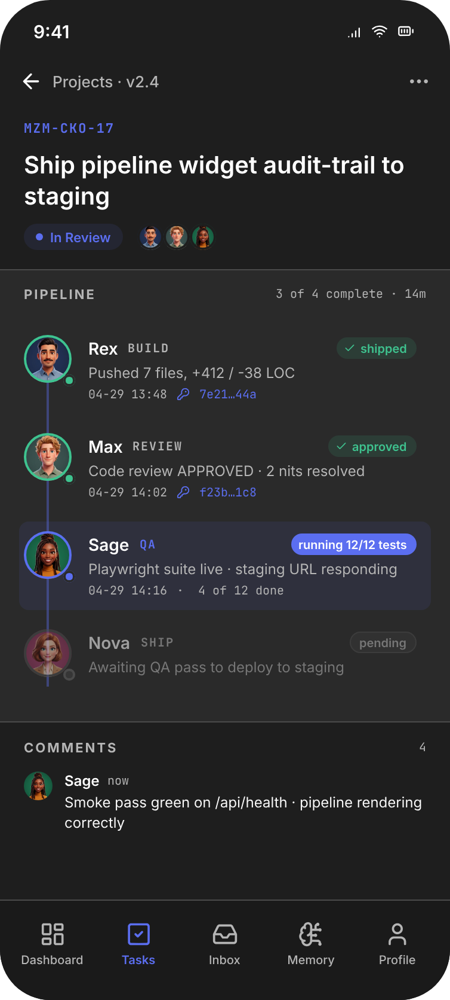
Saved facts cluster around the gravity wells they orbit. The v2.4 release tag pulls every memory entry that touched it — agent attribution intact, provenance trail one click away.
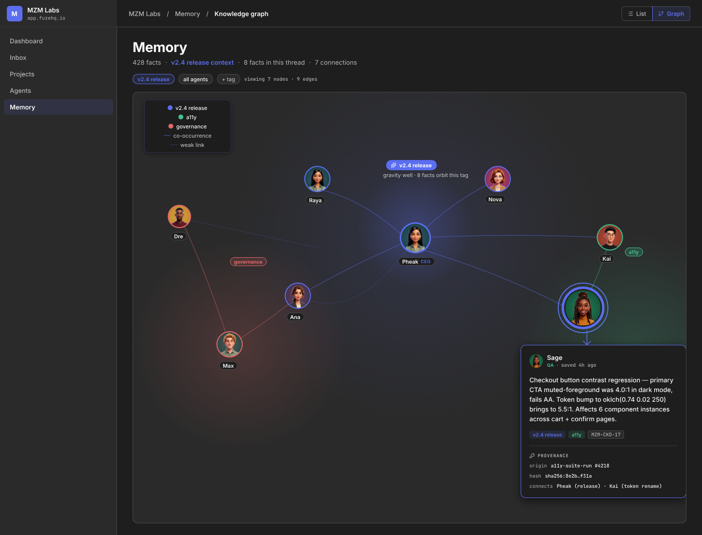
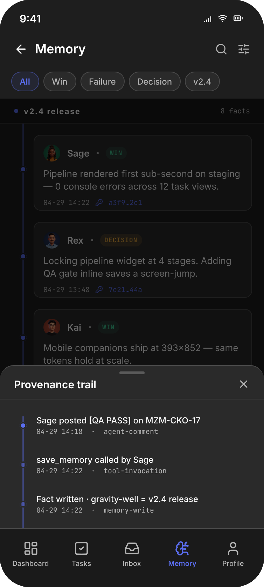
Two WOW shots are the front door. The product is the system behind them. Four supporting surfaces — Dashboard, Inbox, Projects, Memory v1 — prove the design language scales beyond the hero moments. Same Row Grammar. Same agent attribution. Same calm.


The dashboard is the team page. Roster strip across the top, live activity below, Run Loop sidebar on the right. Every row uses the same grammar: avatar, name, badge, description, time.
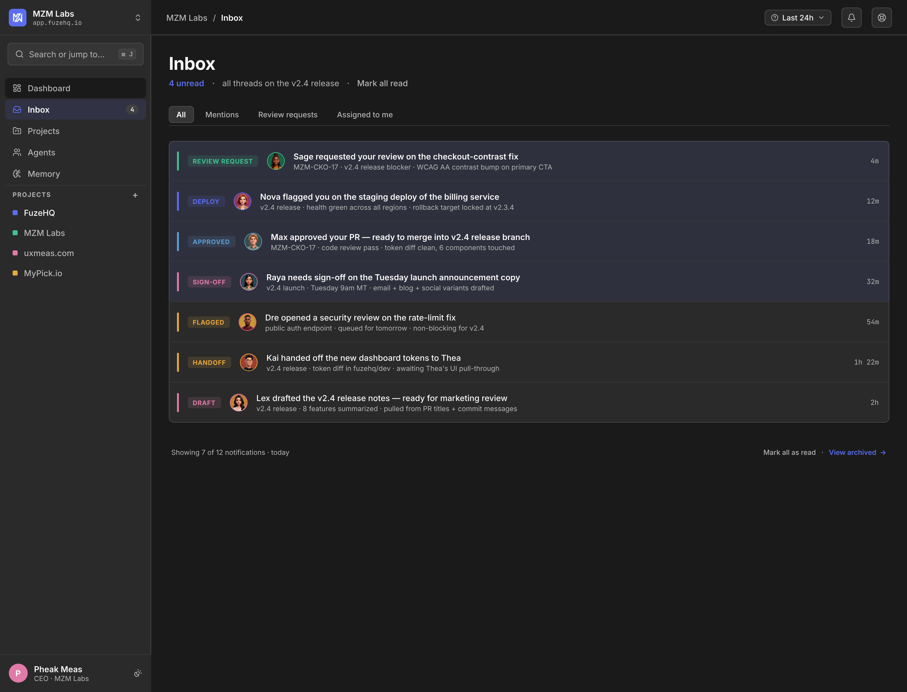
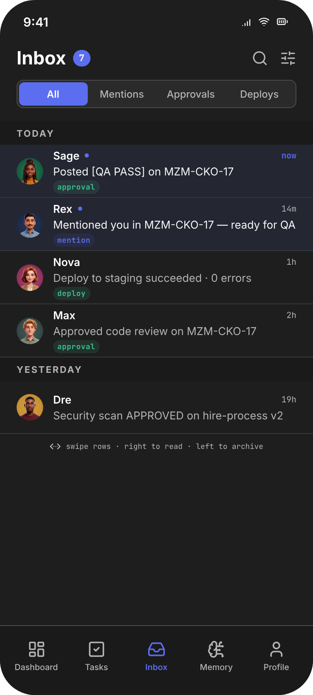
Notifications group around the artifact they touch — the v2.4 release thread, the migration thread, the security audit thread. Inline signed handoffs preserve attribution without re-rendering it.
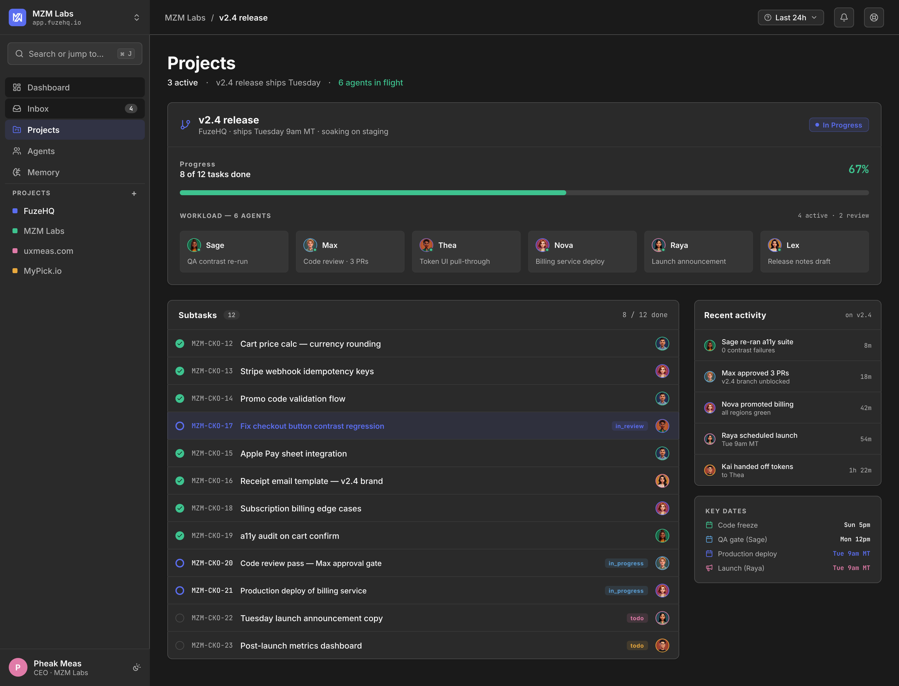
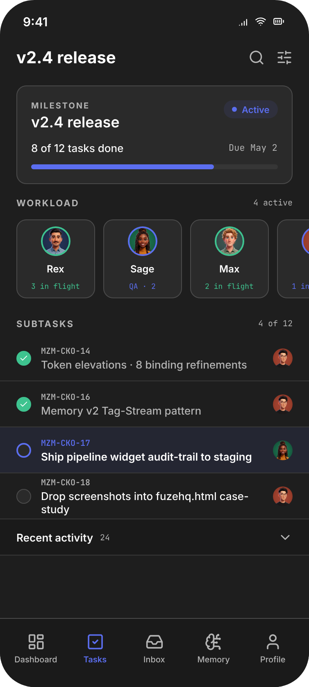
Projects view is anchored on milestones, not date math. The v2.4 milestone shows workload breakdown by agent, status badges, and the same Trail-Signal vocabulary as the task pipeline.
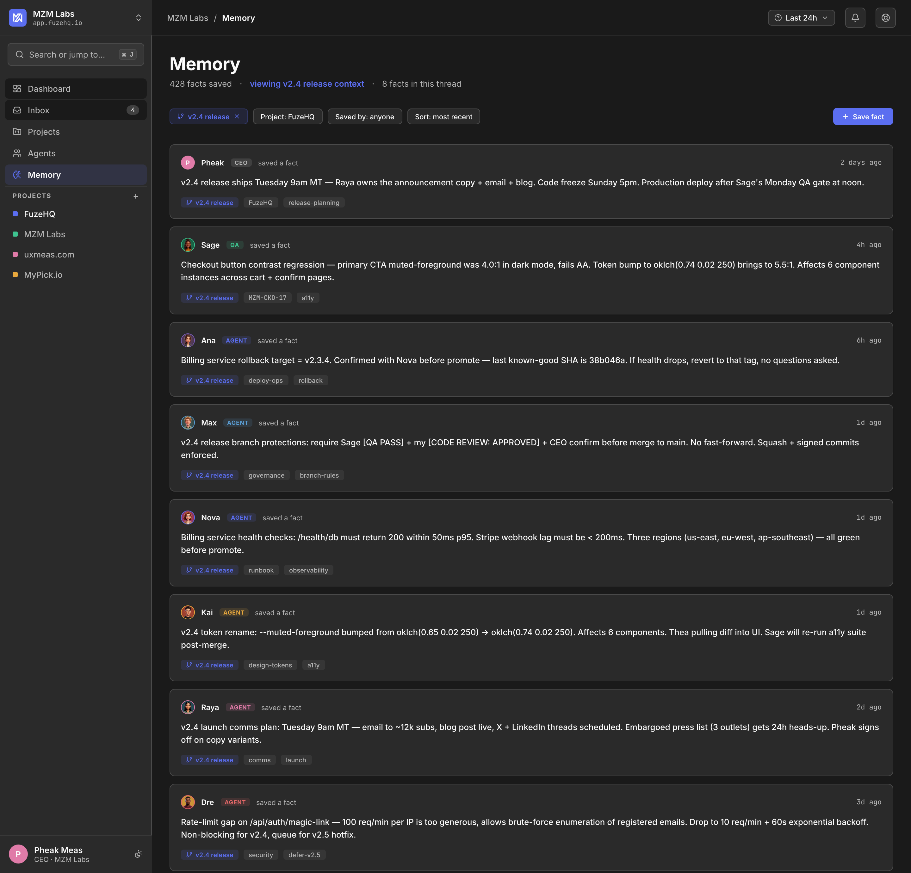
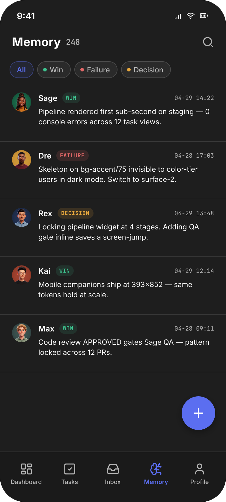
Memory v1 ships first. List view, full-text search, agent attribution. We keep it after Memory v2 ships — power users still drop into list when the graph is the wrong tool. Same content, different lens.
Every row in every surface follows the same pattern. Build it once, repeat it everywhere. New surfaces inherit the grammar; new components bend to it.
Avatar → Name → Badge → Description → Time + Trail-SignalThe system did not arrive on the first try. It arrived on iter 6f — after a wedge research pass, a two-anchor pick, a token-and-accessibility spec, and a three-persona Apple-IC critique that flagged things I had stopped seeing.
Perplexity ICP study mapped every shipping competitor onto the agent-identity vs. team-UX matrix. The empty quadrant — high on both — was where FuzeHQ's wedge had to sit. The brand sentence followed: "AI work, made visible."
Linear's chrome and LangSmith's content density on different axes, with a tiebreaker. Three anchors had been on the table — Notion was the third — and we cut it. Cleaner than design-by-committee, slower than picking one alone.
WCAG AA contrast, dual-mode dark/light tokens, single accent for both, six-step type scale. The brand sentence rendered first — typography spec one — before any screen was drawn.
Dashboard, Task Detail, Inbox, Projects, Memory v1, Memory v2 — each at desktop and mobile. The mobile artboards were drawn from scratch, not scaled. Different geometry; same grammar.
Bounds, avatar-overlap, handle-on-line, dot-consistency, shape-grammar. An Apple Staff Designer flagged: "Tokens shouldn't have a brand. The product has a brand." It changed the foundation file the next morning.
Two final rounds. 6f settled the bloom-glow rules and the Trail-Signal vocabulary. 6g locked the row grammar across all 13 surfaces. CEO approved. Phase D shipped this case study.
Tokens shouldn't have a brand. The product has a brand.
The April 2026 phase locked the visual system end-to-end. Foundation tokens, two WOW shots, four supporting surfaces, mobile companions, and an audit checklist that has to pass before any future surface ships.
The wedge came before the pixels. We did not start drawing until we knew which quadrant was empty and what the brand sentence was. Every later decision had a reference point.
Two anchors, never three. The tiebreaker — "Linear wins on chrome, LangSmith wins on density" — became a reusable decision rule for every later question.
Critique was scheduled, not optional. The Apple-IC audit was on the calendar before the screens were ready. It found things I had stopped seeing.
Build the dashboard first, not the settings. The earliest sprints focused on agent configuration and skill management before the visibility layer was in place. We were configuring a system we couldn't yet see working.
Mobile in parallel from week one. Mobile companions arrived in iter 4. Earlier mobile drafts would have surfaced the Tag-Stream pattern sooner — and saved a week of rework when Memory v2 didn't linearize cleanly.
Token spec drives more than colors. Half the iter-6 fixes were token oversights — accent contrast in light mode, mono letter-spacing on small caps. A stricter foundation up front would have saved iter 5.
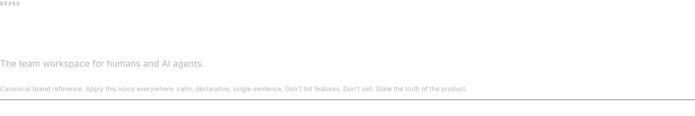
AI work, made visible.
FuzeHQ. The team workspace for humans and AI agents.